|
|
HELP FIND THE FOLLOWING LOCATIONS
PAGE 101
DANGER MAN: Koroshi
(Michael Truman: March 1966)
Unknown 1
- Cherry Blossom – Drake
walks from plane to terminal of Tokyo airport.
 There is a white hut
with a window hidden behind the trees.
There is a white hut
with a window hidden behind the trees.
Unknown 2 - Drake is driven to meet potter at a record shop.
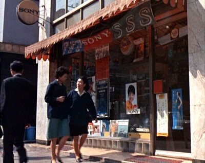
 World Backgrounds
clip 307039 – “Record Shop, Tokyo”
World Backgrounds
clip 307039 – “Record Shop, Tokyo”
Unknown 3 - Tanaka drives Drake from the record shop.
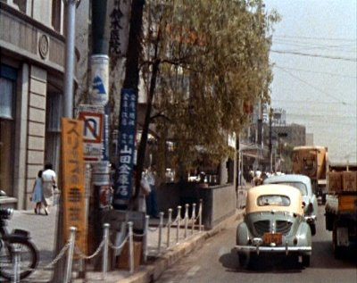 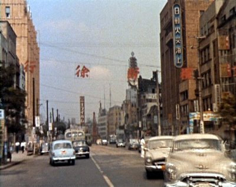
Ginza, Chuo City, Tokyo, Japan (redeveloped) -
Drake goes to visit the Old Japanese Man to find out about the
medallion.
(Identified by Sietse Postma, April 2025)
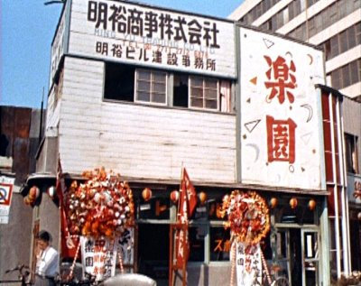 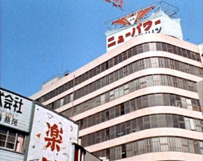
Unknown 5 - Drake uses a bug hidden in a flower to follows Rosemary to Sanders’ house.
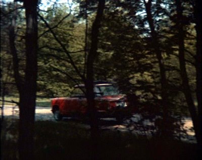 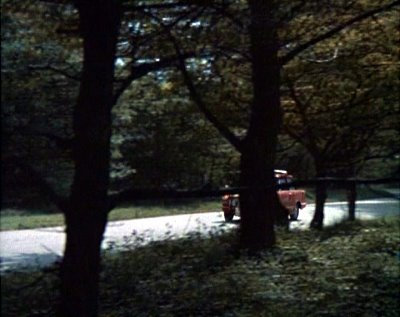 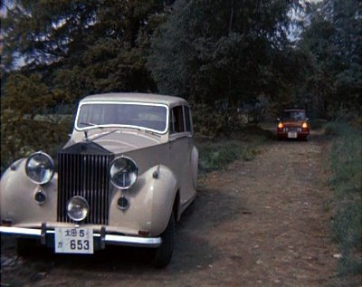 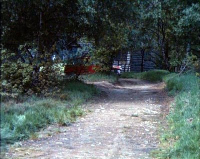
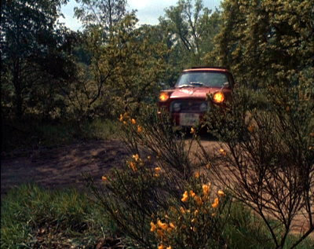
 In this sequence we
can see a large area of mown grass behind the trees and a wooden
building that
could be a shelter – this could be a cricket pitch.
In this sequence we
can see a large area of mown grass behind the trees and a wooden
building that
could be a shelter – this could be a cricket pitch.
Unknown 6 - Sanders’ takes Rosemary back to Tokyo in his Rolls Royce. Again he is trailed by Drake, but this time there is a bomb in Drake’s car.
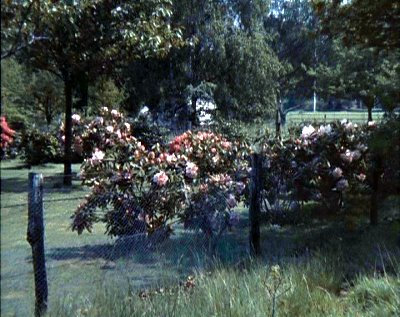 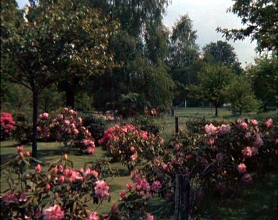 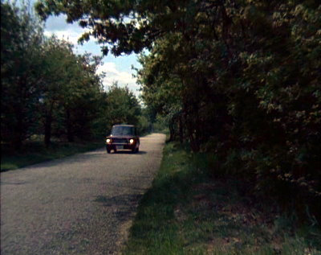
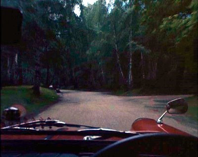 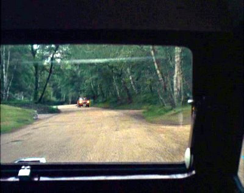 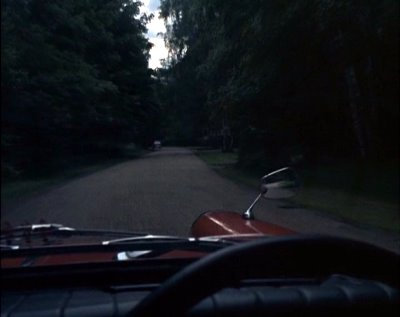
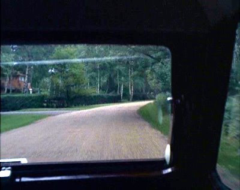 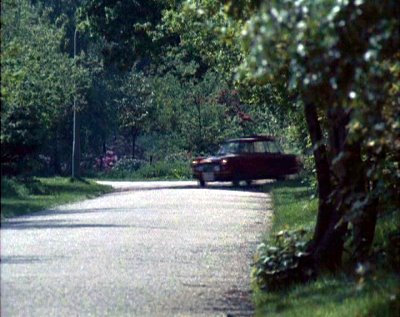 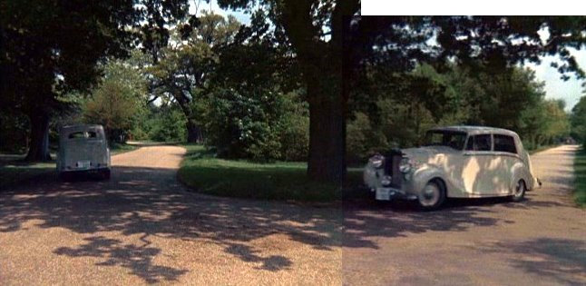
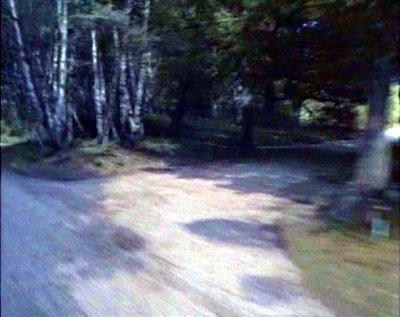 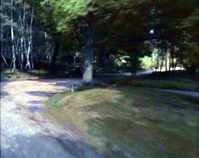 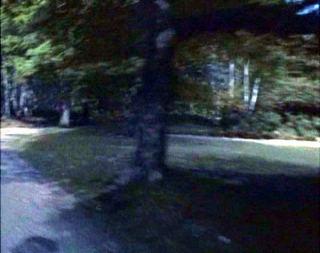 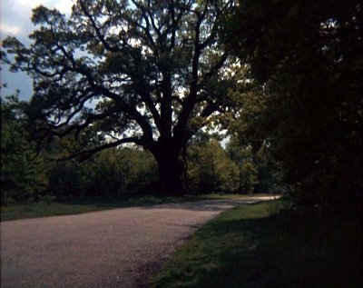
 Given the number of
driveways leading off this road and the quality of the road surface
this could
be a ‘gated community’.
Given the number of
driveways leading off this road and the quality of the road surface
this could
be a ‘gated community’.
Unknown 7 - Sanders tries to escape in a light plane, but Drake uses a Jeep to prevent him from taking off.
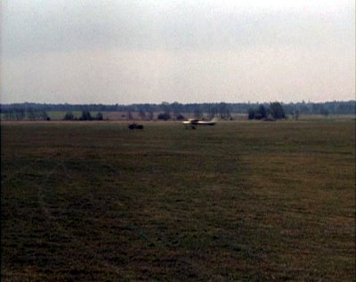 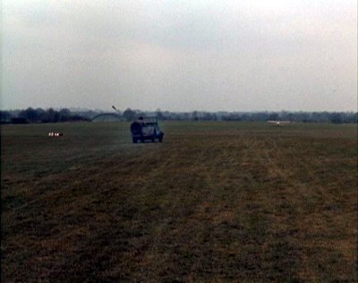
DANGER MAN: Shinda Shima (Peter Yates:March 1966)
Unknown 1 - Fisherman is diving off this island when he is attacked by a frogman.

Tokyo Airport – Edward Sharp arrives in Tokyo by plane and Drake already there to assume his identity.
Unknown 2 - Drake is sent to the Island of Shinda Shima on the next stage of his journey.
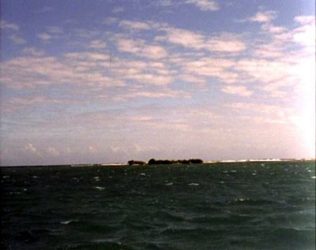
Seasalter,
Kent -
John Drake (Patrick McGoohan) is taken to a small motor boat where a
masked man
is waiting to take him to the island of Shinda Shima. Later Drake and
Miho Nakamura
(Yoko Tani) manage to escape Shinda Shima and swim to the mainland.
Identified by Zeania Squires on the 'Unidentified Photos of the
Briitish Isles' Facebook group.


Unknowns 4 to 9 - Drake returns to the fishing village with Miho. Later the villagers make their way back to the island of Shinda Shima.
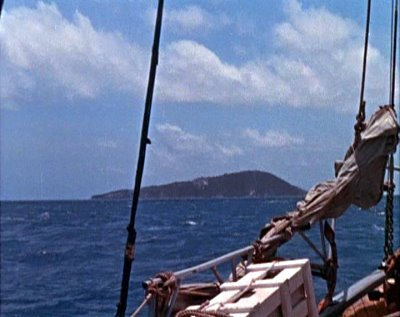

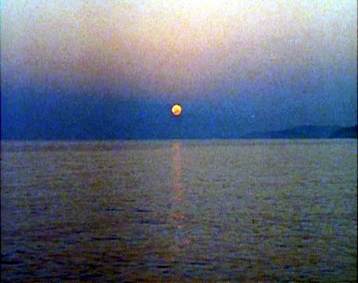

Unknown 10 (World Backgrounds clip 3275) - Drake returns to the fishing village with Miho. Later the villagers make their way back to the island of Shinda Shima.


 This
long stock footage sequence also
includes images of holiday makers and a steel band. So this is a
Caribbean
island.
This
long stock footage sequence also
includes images of holiday makers and a steel band. So this is a
Caribbean
island.
Think you know a spot? Need a bigger image? Email me.
< Previous | Index | Avengerland | Next >
Copyright © 2022 Anthony R. McKay